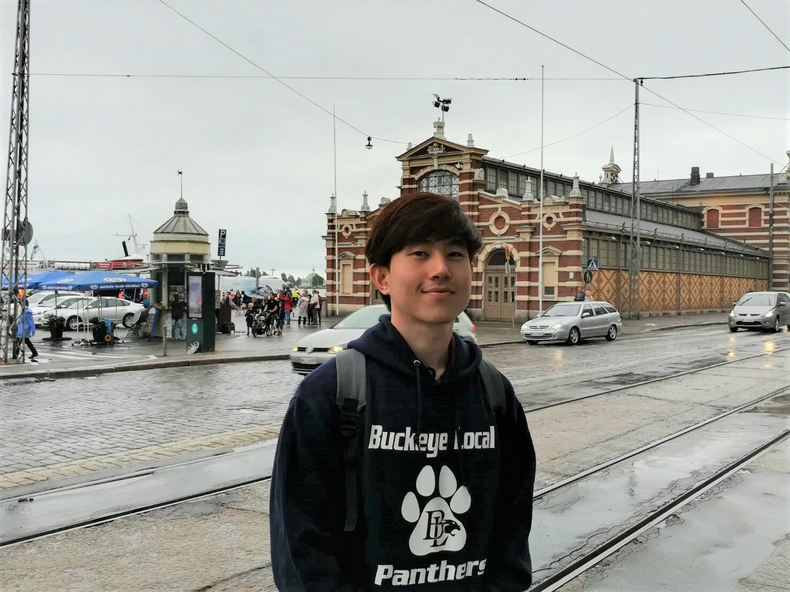

Krerkkiat Veeravutthiphol

Summary
In my current role as a performance marketer at a digital marketing agency, I focus on initiating and managing new ad campaigns while continuously monitoring and optimizing their performance. Given my strong enthusiasm for media and technology trends, my goal is to transition into the technology industry, where I can further leverage my skills and passion.
Education
- Bachelor of Journalism and Mass media communication - Thammasat university(2016-2020)
Certification
- Media Buying Professional/ Media Planning Professional(2023)
- Essential SQL for everyone certified by BorntoDev(2022)
- Fundamental Web development using HTML5 Certified by W3schools(2022)
- Google Ads Search/ Display/ Video Certification(2021)
Professional Experience
Paid Social Executive - GroupM
Sep 2022 - Present
- Campaigns set-up on various platforms with diverse objectives, from awareness to conversions. Key platforms include Meta, TikTok, LAP, and X, with Meta primarily driving the majority of our campaigns.
- Optimize campaigns to boost our primary KPI, return on ad spend. Analyze metrics like CPM, frequency, outbound click rates, add-to-cart, and purchase rates to identify top-performing changes. These strategies were implemented across accounts, include catalog sale, website conversion, and lead generation campaigns.
- Analyze past campaign performance to provide valuable insights to our planners for potential improvements and missed opportunities.
- Explore recently launched platform features such as Advantage+ targeting audiences, to test their potential impact on campaign success.
- Closely monitor daily campaign budgets to ensure efficient spending without exceeding the overall budget. In addition, collaborate with platform representatives, Meta support, to address planner concerns and propose solutions for any issues.
- Generating the Pixel code and embedding it into the client's website. Create custom conversions, optimize the campaign toward event goal, in order to improve campaign performance. Estimate campaign performance by examining data from the previous month.
Digital Biddable Ads Buyer - Innovation of experience
Apr - Jul 2022
- Set up campaigns on Meta and focus on optimizing to reduce the CPA
- Generate a monthly ad performance report and analyze creative performance to determine which ads receive the most interactions and engagement, helping us identify which types of creatives perform the best.
- Proactive addressed we address advertising issues by reaching out to media support for prompt solutions.
- Manage Line Ads accounts for our clients, which involves tasks like broadcasting messages, editing the Rich menu, and adjusting welcoming messages for each chat bubble.
Digital Ads Optimizer(Self-Employed) - Everface Serum Thailand
Aug 2022 - Sep 2023
- Set up, monitor, and optimize campaigns with the goal of boosting both sales and awareness.
- Managing the campaign budget, executing strategic planning, and ensuring that the return on investment remains profitable.
- Collect data through the Meta pixel to optimize event conversion goals.
Digital Marketing(Self-employed) - XDTheory, Sicth, and Cat’s Choice
Jun 2020 - Jul 2021
- Get hands-on with advertising through various platforms, including Google Search and Display, Facebook Ads, and Shopee marketing, to reach a wider audience and achieve our marketing goals.
- Create logos and design content completely from scratch, ensuring a unique visual identity
- Oversee the budget, control costs, and analyze profits to ensure efficient financial management
Others